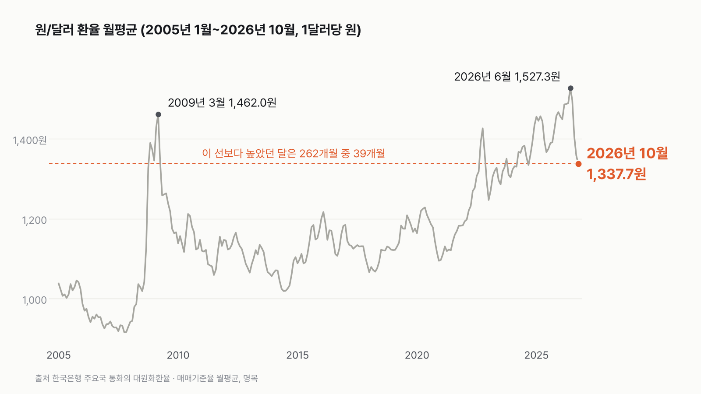

원/달러 환율, 20년 중 높은 편이지만 6월보다 189.6원 낮아요
지금 환율은 20년 전체로 보면 위쪽에 있지만, 최근 2년 안에서는 아래쪽이에요.

3줄 요약
- 2026년 10월 원/달러 환율 월평균은 1,337.7원이에요. 2005년 이후 262개월 가운데 40번째로 높아요.
- 20년 중 가장 높았던 달은 넉 달 전인 2026년 6월(1,527.3원)이었어요. 금융위기 때인 2009년 3월(1,462.0원)보다도 높았어요.
- 10월은 2024년 9월 이후 가장 낮은 달이에요. 6월보다 189.6원 내려왔어요.
'하루 15원'이라는 숫자를 먼저 찾아봤는데, 이 표로는 확인이 안 됐어요. 받은 자료의 마지막 날은 11월 5일이고, 그날 매매기준율은 1,340.7원으로 전날보다 0.5원 낮았어요. 매매기준율은 전날 거래로 정해지니, 그 뒤의 움직임은 다음 고시부터 보여요.
그래서 긴 흐름으로 돌아갔어요. 10월 월평균 1,337.7원보다 높았던 달은 20년 동안 39개월이었어요. 모여 있는 때가 셋이더라고요. 금융위기 무렵인 2008년 11월~2009년 4월이 6개월, 2022년 9~11월이 3개월, 그리고 2024년 4월 이후가 대부분이에요.
이건 저도 몰랐어요. 20년 중 가장 높은 달은 금융위기 때일 줄 알았는데, 올해 6월이었어요. 월평균 1,527.3원. 2009년 3월의 1,462.0원보다 65.3원 높아요. 날짜 하나로 보면 가장 높은 날은 여전히 2009년 3월 3일(1,573.6원)이고, 올해는 7월 2일 1,554.4원이 가장 높았어요. 금융위기 때는 짧고 뾰족했고, 이번엔 높은 달이 길게 이어졌어요.
그 뒤로는 넉 달 연속 내려왔어요. 7월 1,497.4원, 8월 1,406.3원, 9월 1,359.0원, 10월 1,337.7원. 10월은 2024년 9월(1,334.8원) 이후 25개월 만에 가장 낮은 달이에요.
하루 15원이 드문 일인지도 세어 봤어요. 매매기준율 기준으로 2024년 이후 전날보다 15원 이상 오르거나 내린 날이 34번 있었어요. 2025년 15번, 올해 16번이에요. 금융위기 때인 2008년엔 한 해에만 52번이었고, 2022년엔 15번이었어요.
기사에서는 이번 하루 움직임의 이유로 미국 쪽 소식을 들었어요. 이 표에는 환율 숫자만 있어서, 왜 움직였는지는 확인할 수 없었어요.
이 숫자는 어디서 왔나요
출처
기준일 2005년 1월 3일~2026년 11월 5일(일별). 본문 월 순위는 2026년 10월 기준이에요.
한국은행주요국 통화의 대원화환율
- 주요국 통화의 대원화환율KOSIS DT_731Y001원본 보기
원/미국달러 매매기준율, 일별 2005-01-03~2026-11-05, 월평균은 직접 계산
어떻게 셌나요
- 원/미국달러 매매기준율을 썼어요. 은행이 달러를 사고팔 때 기준으로 삼는 값이고, 전날 시장에서 거래된 값을 바탕으로 날마다 정해져요.
- 기사에서 말하는 '하루 몇 원 올랐다'는 보통 장 마감 값(종가) 기준이라, 매매기준율과 숫자가 조금씩 달라요.
- 월평균은 그달 고시된 날의 매매기준율을 더해 날 수로 나눴어요.
- 순위는 2005년 1월~2026년 10월, 262개월 안에서 매겼어요. 11월은 5일까지 나흘뿐이라 순위에서 뺐어요.
- 명목 환율이에요. 한국과 미국의 물가 차이는 반영하지 않았어요.
한계 6가지
이 데이터로 말할 수 없는 것
- 명목 환율이에요. 물가를 반영한 실질 환율이나, 여러 나라 통화를 함께 본 실효환율과는 다른 그림일 수 있어요.
- 매매기준율은 장 마감 종가와 달라요. 기사 속 종가 숫자와 조금씩 차이가 나요.
- 2005년부터만 봤어요. 1997~98년 외환위기 때는 이 범위 밖이에요.
- 2005년엔 토요일에도 고시가 있어 월별 고시일 수가 25~27일이었어요. 월평균은 고시된 날 기준이라 이 차이가 조금 들어가요.
- 환율이 오르고 내린 이유는 이 표로 알 수 없어요. 앞으로 어떻게 될지도 이 숫자로는 말할 수 없어요.
- 대출·예금 금리 흐름은 대출·예금 금리 글에서 따로 다뤘어요.
새 글 나오면 받아 보기
피드 리더 앱에 이 사이트 주소를 한 번 넣어 두면, 새 글이 올라올 때 앱에 떠요. 가입이나 메일 주소는 필요 없어요.
받는 법 보기
- 피드 리더 앱을 하나 골라요. 새 글을 모아 보여 주는 앱이에요. 예를 들면 Feedly나 Inoreader가 있어요. 둘 다 무료고 웹·휴대폰에서 써요.
- 앱에서 '구독 추가'(+)를 누르고 아래 주소를 붙여 넣어요.
- 끝이에요. 새 글이 올라오면 앱 목록에 떠요.
https://protofu.github.io/opendata-insight/feed.xmlFeedly를 쓴다면 여기를 눌러 바로 추가할 수도 있어요.